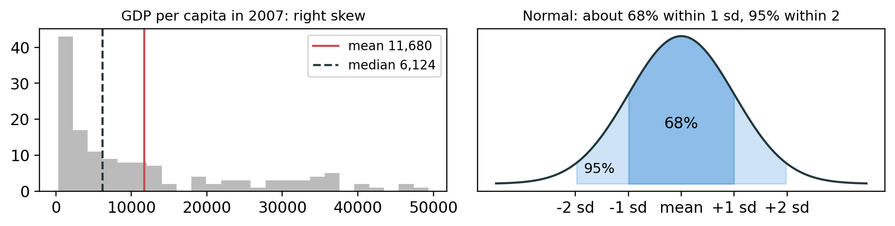
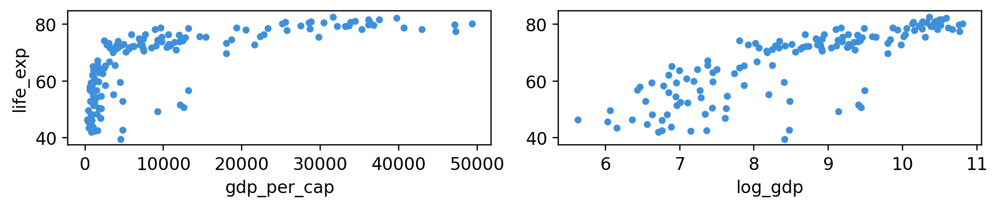
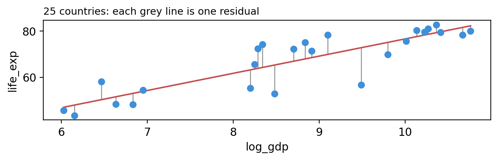
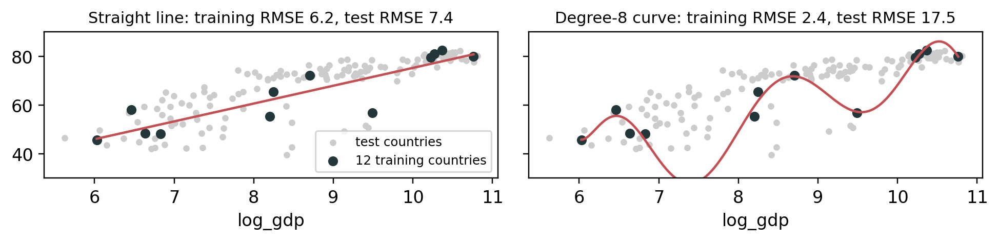

import numpy as np
import pandas as pd
import matplotlib.pyplot as plt
plt.style.use("petroff10")
url = "https://raw.githubusercontent.com/damien-dupre/data/refs/heads/master/gapminder.csv"
gapminder = pd.read_csv(url)
gapminder = gapminder.rename(columns={"lifeExp": "life_exp", "gdpPercap": "gdp_per_cap"})
g2007 = gapminder[gapminder["year"] == 2007]Lecture 9: Statistics, Regression and Prediction
BAA1118 - Foundations of Programming for Analytics & AI
Damien Dupré
For Today
Requirements
- ✅ pandas: filtering and
groupby, from lecture 7 - ✅ matplotlib: scatter plots and the log scale, from lecture 8
Programme
- Describing one variable
- Samples and uncertainty
- Correlation
- Linear regression
- Prediction
From Description to Prediction
- Description: the mean life expectancy in Europe? Lectures 7 and 8
- Explanation: how strongly is income associated with it? Sections 1 to 4
- Prediction: for a given income, what life expectancy, and how wrong? Section 5
Most of today uses g2007, the 142 countries of 2007.
1. Describing One Variable
The Centre: Mean and Median
GDP per capita: mean 11680 median 6124
Life expectancy: mean 67.0 median 71.9- Mean: add everything up, divide by the count. A few very rich countries pull it up
- Median: the middle value once sorted. Half the countries are above it, half below
- A mean above the median usually signals a tail of high values, right skew; below it, left skew. For a skewed variable, report the median, or both
Spread: Standard Deviation
[-3.0, -1.0, -1.0, -1.0, 0.0, 0.0, 2.0, 4.0]
4.57
4.57 2.14- Variance: the average squared distance from the mean, dividing by n − 1 for a sample. Standard deviation: its square root, in the original units
- pandas divides by n − 1; numpy’s
np.std()divides by n, and gives 2.0 - IQR,
quantile(0.75) - quantile(0.25): the spread of the middle half
Shape: Skew and the Normal Curve

- In a right-skewed variable, the tail pulls the mean past the median
- In a normal, bell-shaped variable, about 68% of values lie within 1 standard deviation of the mean, and about 95% within 2. Section 2 relies on that 95%
Your Turn: Describe a Variable
- Mean and median of
popin 2007, in millions. Why are they so far apart? - Standard deviation and IQR of
life_expin 2007, for Europe and for Africa. Which is more spread out? - By hand, then with
.std(): the standard deviation of[3, 5, 7]
You should see:
44.0 10.5
Europe 3.0 4.8
Africa 9.6 11.6
2.0Solution
pop_m = g2007["pop"] / 1_000_000
print(round(pop_m.mean(), 1), round(pop_m.median(), 1))
for continent in ["Europe", "Africa"]:
life_c = g2007[g2007["continent"] == continent]["life_exp"]
iqr = life_c.quantile(0.75) - life_c.quantile(0.25)
print(continent, round(life_c.std(), 1), round(iqr, 1))
print(pd.Series([3, 5, 7]).std())44.0 10.5
Europe 3.0 4.8
Africa 9.6 11.6
2.0China and India, over a billion people each, drag the mean of pop far above the median. By hand: deviations −2, 0, 2; squares 4, 0, 4; 8 / 2 = 4; √4 = 2.
2. Samples and Uncertainty
Every Sample Gives a Different Answer
Treat the 1,704 rows of gapminder as everything there is. Their mean life expectancy is 59.5 years. Now pretend you can only afford to collect 30 rows:
57.9
59.9
59.7
57.0
60.0Five samples, five answers, and none is 59.5. None is wrong either: each one is uncertain. random_state makes a random sample repeatable.
The Standard Error

The spread of all possible sample means is the standard error. From one sample, estimate it as the standard deviation divided by √n:
57.9 2.4Four times as much data halves the standard error.
Confidence Intervals and p-values
53.2 to 62.7- 95% confidence interval: the estimate ± 1.96 standard errors. Of all intervals built this way, 95% contain the true value. This one does: 59.5
- p-value: if the true value were 0, how often would chance alone give an estimate at least this far from 0? Below 0.05, by convention, it is called statistically significant
- A p-value is not the probability that a result is true, and significant does not mean large or important
3. Correlation
Correlation

| life_exp | gdp_per_cap | pop | |
|---|---|---|---|
| life_exp | 1.00 | 0.68 | 0.05 |
| gdp_per_cap | 0.68 | 1.00 | -0.06 |
| pop | 0.05 | -0.06 | 1.00 |
r runs from −1 to +1 and measures how close the points are to a straight line. It has no units, and is the same in both directions; each column with itself gives 1.
Correlation Only Sees Straight Lines
0.68 0.81
np.log() turns doublings into equal steps, as the log axis did in lecture 8. Same countries, same relationship, only its shape changed: r went from 0.68 to 0.81.
Correlation Is Not Causation
Important
A correlation, or a regression, finds an association. Richer countries also have more doctors, cleaner water and more schooling: income stands in for all of them.
- You may write: “in 2007, countries with higher incomes had longer life expectancies”
- You may not write: “raising income raises life expectancy”
- r near 0 does not mean no relationship, only no straight-line one: a U-shape can give r = 0. Plot first, as Anscombe showed in lecture 8
Your Turn: Correlation and Shape
- In 2007, the correlation between
life_expandpop. Then plot it,popon a log x-axis: does the picture agree with the number? - In 1952, the correlation of
life_expwithgdp_per_cap, then with its log (np.log). Was income as strongly related then?
You should see:
0.05
0.28
0.75Solution
pop: a shapeless cloud. 1952: curved, so 0.28 raw but 0.75 log.
4. Linear Regression
The Line of Best Fit
life_exp = intercept + slope × log_gdp + residual

- Slope: the change in life expectancy per unit of
log_gdp. Intercept: the prediction whenlog_gdpis 0. Residual: actual minus predicted - Ordinary least squares (OLS) picks the line with the smallest sum of squared residuals
Fitting a Model
Intercept 4.949612
log_gdp 7.202802
dtype: float64"life_exp ~ log_gdp"reads “life_exp explained by log_gdp”: the outcome goes on the left of~, the predictors on the rightsmf.ols()sets the model up,.fit()estimates it, and.paramsholds the intercept and the slope- More predictors are added with
+:"life_exp ~ log_gdp + pop"
Reading the Coefficients
5.0 years per doubling of income- Slope, 7.2: one more unit of log GDP goes with 7.2 more years of life expectancy. One unit of log means income × 2.7, so more usefully: each doubling of income goes with 5.0 more years
- Intercept, 4.9: the prediction for log GDP of 0, an income of $1 a year. That is far outside the data: do not interpret it
- Write “is associated with”, never “causes”
Reading the Rest of the Table
==============================================================================
coef std err t P>|t| [0.025 0.975]
------------------------------------------------------------------------------
Intercept 4.9496 3.858 1.283 0.202 -2.677 12.576
log_gdp 7.2028 0.442 16.283 0.000 6.328 8.077
==============================================================================std err: each estimate’s standard error, as in section 2[0.025 0.975]: the 95% confidence interval. Slopes from 6.3 to 8.1 are compatible with the dataP>|t|: the p-value against a true value of 0. The slope’s0.000, below 0.0005: if the true slope were 0, chance would almost never give one this far from it. The intercept’s 0.202: compatible with 0
How Well Does It Fit?
- R² = 0.65: the model accounts for 65% of the variation in life expectancy between countries. The other 35% is how far countries sit above or below what their income predicts
- Residual standard error, 7.1 years: most countries are within about 7 years of the line, a few much further
Warning
A high R² does not make a model right, nor a low one useless: judge it by what it is for.
A Categorical Predictor
Intercept 20.14
C(continent)[T.Americas] 11.69
C(continent)[T.Asia] 10.11
C(continent)[T.Europe] 11.27
C(continent)[T.Oceania] 12.93
log_gdp 4.63
dtype: float64
0.77C()adds a 0/1 column per continent but the first alphabetically, Africa: the reference. Each coefficient is a difference from Africa- At the same income, life expectancy is 11.3 years higher in Europe than in Africa, on average; the income slope falls from 7.2 to 4.6
Your Turn: Fit a Model
On g1952, the 1952 countries, with a log_gdp column added:
- Fit
life_exp ~ log_gdp. Slope, years per doubling of income, and R²? - Compared with 2007, was a doubling of income associated with more or fewer years?
- Add
C(continent): how much does R² rise?
You should see:
8.83 6.1 0.56
0.74Solution
g1952["log_gdp"] = np.log(g1952["gdp_per_cap"])
fit52 = smf.ols("life_exp ~ log_gdp", data=g1952).fit()
per_doubling = fit52.params["log_gdp"] * np.log(2)
print(round(fit52.params["log_gdp"], 2), round(per_doubling, 1), round(fit52.rsquared, 2))
fit52c = smf.ols("life_exp ~ log_gdp + C(continent)", data=g1952).fit()
print(round(fit52c.rsquared, 2))8.83 6.1 0.56
0.74- In 1952 a doubling of income went with 6.1 more years, against 5.0 in 2007: a steeper slope, but a looser fit (R² 0.56 against 0.65)
- Continent lifts R² from 0.56 to 0.74, more than in 2007 (0.65 to 0.77)
5. Prediction
Explanation vs Prediction
- Explanation: what is the slope, and how sure are we? Fitted on all the data, judged by its standard errors. That was section 4
- Prediction: for a country the model has never seen, how wrong will the guess be?
- On average, a model fits its own data better than new data: judging it there is marking your own homework
- So: fit on some countries, test on the others, and look at the test set once
This is the idea every machine learning model, from a regression to a neural network, is evaluated on.
Train and Test
106 countries to fit the model, 36 to test itsample(frac=0.75)draws 75% of the rows at random;drop(train.index)keeps the restrandom_statemakes the split repeatable: the same countries every time- The test countries take no part in fitting: for the model, they are new
Predict and Measure the Error
RMSE 8.0 years; MAE 5.7 years- RMSE: square the errors, average them, take the root: the root mean squared error. Big misses weigh more
- MAE: the mean absolute error, the average miss. The easiest to explain
- Both in years, on 36 countries the model never saw. On its own 106 training countries the RMSE is 6.7: on average, a model looks better on the data it was fitted on
Predicting for New Data
| gdp_per_cap | log_gdp | predicted_life_exp | |
|---|---|---|---|
| 0 | 2000 | 7.600902 | 59.7 |
| 1 | 10000 | 9.210340 | 71.6 |
| 2 | 45000 | 10.714418 | 82.7 |
Warning
Never predict outside the range of the data. Incomes in 2007 run from $278 to $49,357: for $500,000, the same line predicts 100.5 years. It has never seen such a country, and neither have you.
Overfitting

A straight line has two numbers to estimate and barely overfits. The degree-8 curve has nine: it learns the noise of its 12 points, so its training error falls while its test error more than doubles. Use the test set once, at the end, or you start fitting to it too.
The Same Pattern in scikit-learn
3.62 [7.38]
[3.62, 7.38]- Same split, same line.
Xis a DataFrame, hence two brackets;yis a Series - Choose a model,
.fit(),.predict(): the same three steps for decision trees, random forests and neural networks - scikit-learn has no summary table: it is built for prediction, not explanation
What You Can and Cannot Write
In 2007, across 142 countries, each doubling of GDP per capita was associated with about 5 more years of life expectancy (95% CI 4.4 to 5.6), and income accounted for 65% of the variation. On 36 countries held out from fitting, predictions missed by 5.7 years on average.
- Numbers in real units, with their uncertainty and their scope
- No cause: “associated with”, not “raises”
- No extrapolation: nothing about incomes outside $278 to $49,357
Your Turn: Predict
With the same train and test:
- Fit
life_exp ~ log_gdp + C(continent)ontrain - Predict
test: RMSE and MAE? - Does knowing the continent improve the predictions, and by how much?
- Predict the life expectancy of an Asian country with a GDP per capita of $5,000
You should see:
RMSE 6.0, MAE 4.0
69.7Solution
fit2 = smf.ols("life_exp ~ log_gdp + C(continent)", data=train).fit()
errors2 = test["life_exp"] - fit2.predict(test)
rmse2 = np.sqrt((errors2 ** 2).mean())
mae2 = errors2.abs().mean()
print(f"RMSE {rmse2:.1f}, MAE {mae2:.1f}")
asia = pd.DataFrame({"log_gdp": [np.log(5000)], "continent": ["Asia"]})
print(fit2.predict(asia).round(1).tolist())RMSE 6.0, MAE 4.0
[69.7]The continent cuts the typical miss from 8.0 to 6.0 years (RMSE), and the average miss from 5.7 to 4.0. A test country’s continent must also appear in train, or predict() stops with an error.
Test 2: Thursday 26 November
- In class, one hour, multiple choice, like Test 1
- It covers lectures 7, 8 and 9: pandas, matplotlib, statistics and regression
- The best revision: redo every Your Turn from these three lectures without the solution, then check
- On the answer sheet, cross the boxes of your student number, do not only write the digits, and cross your answers rather than shading them

Thanks for your attention and don’t hesitate to ask if you have any questions!